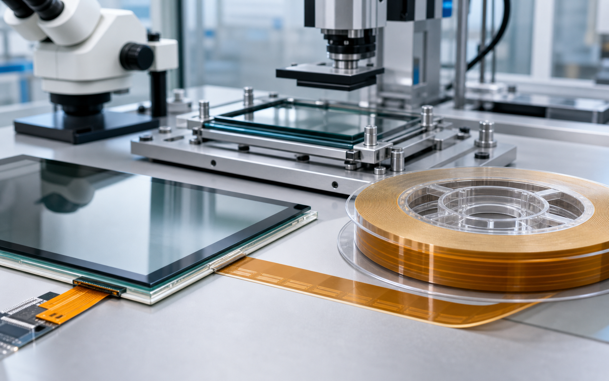

触摸屏 TP：GG / PG / OGS
AC7106U-25、AC7206U-18、AC7813KM-25、AC7813YM-25、AC3818J-18。
Hitachi ACF
常用 AC、MF 系列现货与型号匹配，覆盖 TP、GF/GFF、模组与多类显示绑定场景。

AC7106U-25、AC7206U-18、AC7813KM-25、AC7813YM-25、AC3818J-18。
MF331、MF332、MF334、MF347、AC3514。
AC832L、AC823CY-20、AC8955YW、AC805A、AC4255CU-16、AC868GE、AC8412KZ-18、AC835A、AC860A、AC841A、AC827A-16。
AC11100Z、AC11400、AC11800、AC4325、AC2056R、AC9865AR、AC9855RM-40、AC17338BL-10、AC4255CU、AC17358M-10。
Ready to quote
联系 黄工，提供结构、型号、胶宽、卷长和应用场景，我们会尽快协助确认。